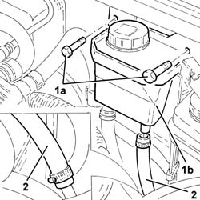
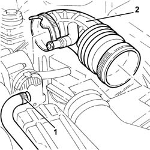
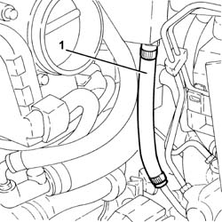
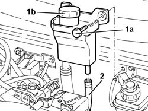

4130B82 return pipe between rigid intermediate return pipe to fluid resevior r r
- Path
- Procedures > 41 STEERING > 4130 POWER ASSISTED STEERING > 4130B power steering hydraulic sytem > 4130B82 return pipe between rigid intermediate return pipe to fluid resevior r r
- Kind
- repair procedure (removal / refitting; the operation number is the code)
- Applies to
- engines: 2.5 V6, 3.2 V6, 1.9 JTD 8v , 2.4 JTD 10v; all production periods
- Interactive page
- https://sloeber94.github.io/elrnDB-a156/en/#/3238153
Applies to: engines: 2.5 V6; all production periods
 Removing
Removing
 Refitting
RefittingPosition the vehicle on the ramp
Drain the power steering fluid from the reservoir using a suitable syringe.
Proceed with removal 1048A34 sleeve(s) from flow meter to air supply capacity case - r + r .
Proceed with removal 5530B10 battery - r+r .
Proceed with removal 7055B54 under-engine guard - r r .
1. Undo the bolts (1a) securing the power assisted steering fluid reservoir (1b) to the engine bulkhead.
2. Loosen the bands and remove the rubber pipe from the rigid return pipe to the fluid reservoir.

Applies to: engines: 2.5 V6; all production periods
Refitting
RemovingPlace the rubber hose from the rigid return pipe to the fluid reservoir back in its housing and tighten the bands.
Tighten the bolts securing the power steering fluid reservoir to the engine bulkhead.
Proceed with refitting 7055B54 under-engine guard - r r .
Proceed with refitting 5530B10 battery - r+r .
Proceed with refitting 1048A34 sleeve(s) from flow meter to air supply capacity case - r + r .
Fill the power steering circuit with the recommended fluid.
 | Type | Component | Name | Qty. |
|---|---|---|---|---|
- | Fluid | POWER ASSISTED STEERING CIRCUIT | TUTELA GI/A | - |
Bleed the power steering system as described below
With the front wheels raised off the ground, with the engine switched off turn the steering wheel to full lock, left and right, 4-5 times.
Check and, if necessary, top up the fluid level in the reservoir.
Remove the car from the ramps.
Start the engine and carry out 4 - 5 full steering wheel turn cycles (right and left).
Top up the fluid level in the reservoir.
Applies to: engines: 3.2 V6; all production periods
Removing
Refitting1. Loosen the band and disconnect the right cylinder head oil vapour recirculation pipe from the hose between the resonator and the throttle casing.
2. Loosen the bands and remove the hose between resonator and throttle body.

Applies to: engines: 3.2 V6; all production periods
Proceed with removal 5530B10 battery - r+r .
Proceed with removal 5530B52 Battery DRIP TRAY/SUPPORT - R.R. .
Drain the power steering fluid from the reservoir using a suitable syringe.
1. Loosen the bands and remove the rubber pipe from the rigid return pipe to the fluid reservoir.

Applies to: engines: 3.2 V6; all production periods
Refitting
RemovingPlace the rubber hose from the rigid return pipe to the fluid reservoir back in its housing and tighten the bands.
Proceed with refitting 5530B52 Battery DRIP TRAY/SUPPORT - R.R. .
Proceed with refitting 5530B10 battery - r+r .
Place the hose between the resonator and the throttle casing back in its housing and tighten the bands.
Connect the right cylinder head oil vapour recirculation pipe to the hose between the resonator and the throttle casing and tighten the band.
Fill the power steering circuit with the recommended fluid.
| Type | Component | Name | Qty. |
|---|---|---|---|---|
- | Fluid [l] | HYDRAULIC POWER ASSISTED STEERING SYSTEM | TUTELA GI/A | 1.2 |
Bleed the power steering system as described below
With the front wheels raised off the ground, with the engine switched off turn the steering wheel to full lock, left and right, 4-5 times.
Check and, if necessary, top up the fluid level in the reservoir.
Start the engine and carry out 4 - 5 full steering wheel turn cycles (right and left).
Top up the fluid level in the reservoir.
Applies to: engines: 1.9 JTD 8v , 2.4 JTD 10v; all production periods
Removing
RefittingPlace the vehicle on a ramp.
Drain the power steering fluid from the reservoir using a suitable syringe.
5530B52 Battery DRIP TRAY/SUPPORT - R.R.
Disconnect the rubber pipe from the rigid return pipe to the fluid reservoir, rigid pipe side.
1. Undo the bolts (1a) and raise the power steering fluid reservoir (1b).
2. Disconnect and remove the rubber pipe from the rigid return pipe to the fluid reservoir from the tank.

Applies to: engines: 1.9 JTD 8v , 2.4 JTD 10v; all production periods
Refitting
RemovingPlace the rubber pipe from the rigid return pipe to the fluid reservoir back in its housing and connect to the tank.
Refit in its seating the power steering fluid reservoir and secure it with its bolts.
Connect the rubber pipe from the fluid reservoir rigid return pipe to the fluid tank, rigid pipe side.
5530B52 Battery DRIP TRAY/SUPPORT - R.R.
Fill the power steering circuit with the recommended fluid.
| Type | Component | Name | Qty. |
|---|---|---|---|---|
- | Fluid | POWER ASSISTED STEERING CIRCUIT | TUTELA GI/A | - |
Bleed the power steering system as described below
With the front wheels raised off the ground, with the engine switched off turn the steering wheel to full lock, left and right, 4-5 times.
Check and, if necessary, top up the fluid level in the reservoir.
Position the vehicle on the ground and start up the engine.
Carry out 4 - 5 complete steering wheel rotation cycles (right and left).
Top up the fluid level in the reservoir.
Topics linked from this page (4)
- 1048A34 sleeve(s) from flow meter to air supply capacity case - r + r
- 5530B10 battery - r+r
- 5530B52 Battery DRIP TRAY/SUPPORT - R.R.
- 7055B54 under-engine guard - r r